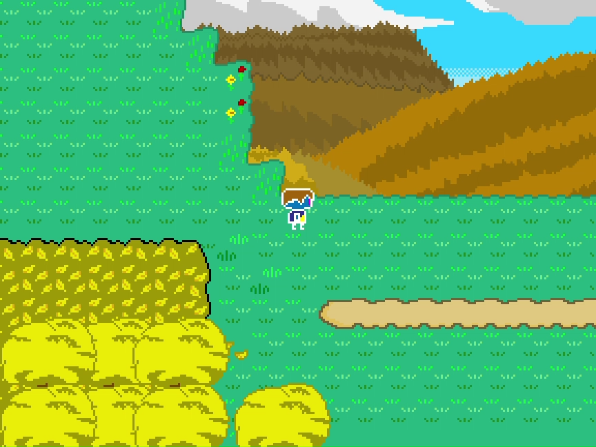
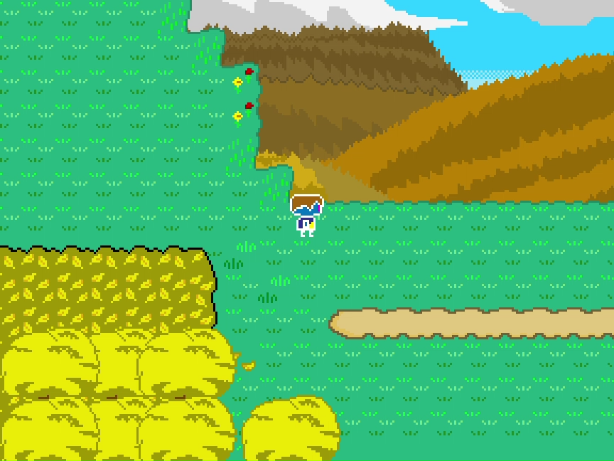
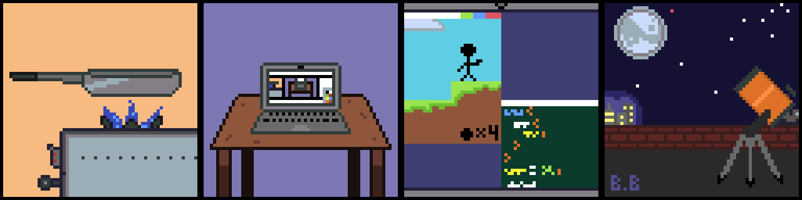
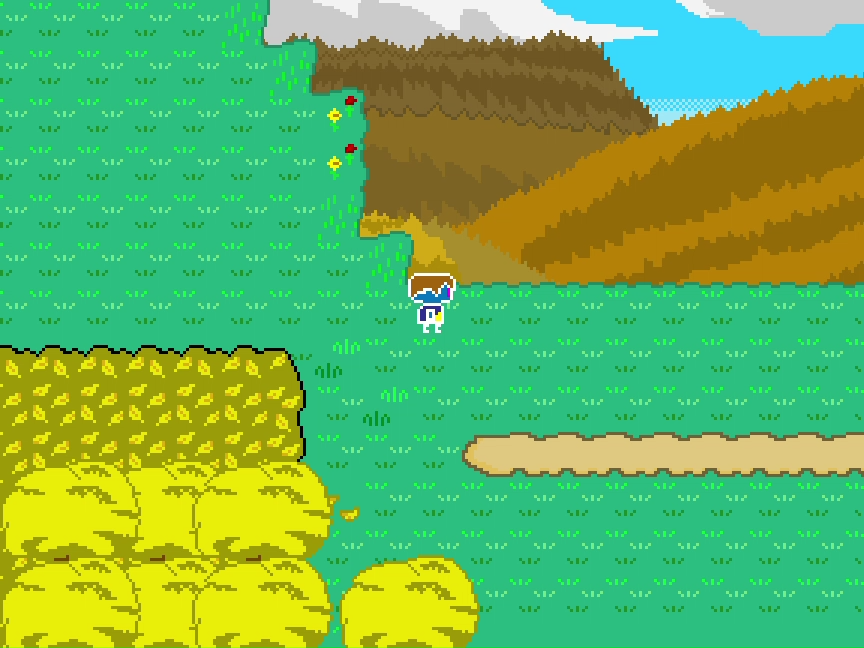

Hello! My name is Bryan Briones and I'm a senior majoring in
Emerging Media after having done Computer Science a few semesters back.
I'm from Brooklyn and of Mexican descent, with my hobbies/favorite pastimes being cooking,
making pixel art, some
coding especially on web and game development, and
(despite light pollution) both astronomy and astrophotography!
I also own two cats named Luna and Sol, both unintentionally.
WARNING: Art seen below has been made in haste.

To keep it short and simple, I like creating things and sharing with people the things I'm interested in.
I prefer to create backgrounds in the pixel art style but am
very much open
to create objects, people, and so on, since I like to go outside my comfort zone especially when
I've been making art in this format for several years now.
Astrophotography is something I've
picked up recently a few years ago but it's still something I'm passionate about as I'm both very
much into science
and sharing with people the things I get to see in spite of us living in
such a bright city. Finally, game and web development is something I've had little
time
in compared to everything else, but have done my best to gain more knowledge and skill in, as I feel
more in my element when creating something for people to
see in a way that impacts
them as well as simply liking coding (despite the frustrations when your code doesn't
work of course).
Some Examples of Each Respectively:

(Pixel Art, Photo of a Nebula, and a Game I've Tried Working On)
For this course, my goals would be:
FILLER TEXT BUT CONGRATS IF YOU SEE THIS